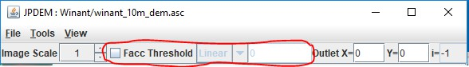
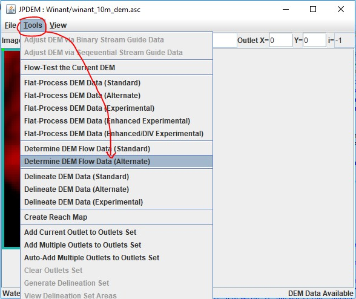
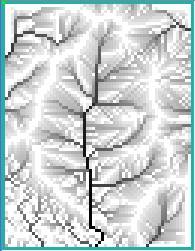
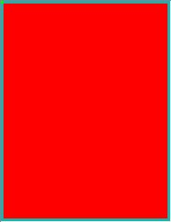
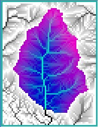

+
B.3 | JPDEM Flow Accumulation (Facc) Threshold Display
Overview (Tutorial B.3_JPDEM Facc Threshold Display)
This document explains how to use JPDEM's flow accumulation threshold display to analyze and prepare a DEM to:
- Identify primary flow paths
- Select an outlet cell
- Delineate the watershed boundary for a selected outlet
In JPDEM, a DEM cell's flow accumulation (“Facc”) is the number of upstream cells that flow into that cell. Cells with high Facc values are cells that have high water flow, and cells with high water flow are likely to contain channels. The JPDEM application's Facc Threshold display control provides a way to quickly identify and visualize the cells in a (flat-processed) DEM whose Facc values are at or above a specified threshold. You can use the Facc Threshold display to get an idea of which areas and cells of a DEM are likely its main water channels.
JPDEM must have Facc values available for the currently-loaded DEM before the Facc Threshold display is used. JPDEM calculates the Facc values for a DEM during flat-processing, or when the “Determine DEM Flow Data” Tools menu item is run for a previously flat-processed DEM map. Perform either activity before using the Facc Threshold display controls.
Sidenote: JDPEM and VELMA both compute “flow accumulation” values for the cells of their specified DEM map, and both refer to these as the “Facc” values. However, VELMA calculates Facc values differently than JPDEM. JDPEM and VELMA Facc values for a given cell, while similar, are unlikely to be identical.
The Facc Threshold display controls are located in the center of JPDEM's upper toolbar:
From left to right, the controls are: a checkbox that toggles the display on and off, a drop-downselector for specifying the threshold value's type, and a number-entry field for specifying the thresholdvalue. All three controls are disabled until a map file is loaded into JPDEM, and the typeselector and number- entry field are disabled whenever the checkbox is unchecked.
Using the Facc Threshold Display by Example
In this example, we start with a DEM map that was previously flat-processed, then saved to a new.asc file (see Tutorial B.1 - Creating Flat-Processed DEM Data). We could also start with anunprocessed DEM map - the only difference being that our first step would change from Findingthe Flow Data, to Flat-Processing the map.
Step 1
Load the (flat-processed) DEM map from its .asc file, then click the Tools -> "Determine DEMFlow Data (Alternate)" menu item:
You can use either the "(Standard)" or "(Alternate)" Determine DEM Flow Data item - but theAlternate algorithm is usually quicker.
Step 2
Click the Flow Threshold checkbox control to enable the threshold display. The entire map turnsred. Don't panic! The default Facc threshold value is zero, and the display is showing you allthe cells with Facc values > 0.0. Change the number-entry field value to 25.0 and press theTab key. The display now shows all cells with Facc values > 25.0 in red.
| Facc threshold OFF | ON, with threshold = 0 | ON, with threshold = 25.0 |
|  |  |  |
| ON, with threshold=2200.0 | After Delineation | Threshold display ON again |
 |
 |  |
Try changing the threshold (always follow changing the value by pressing the Tab key) tosuccessively larger values. Watch how the number of red cells that meet that Facc thresholddwindles. These are cells with high waterflow.
Step 3
Set the threshold to a large value (2000.0), select one of the highlighted cells as an outlet ON, with threshold = 2200.0
Delineation automatically toggles the threshold display OFF, because delineation andthreshold data cannot be displayed at the same time. Click the Facc Threshold checkboxto re-enable the display.
Other Options and Some Limitations
You can change the type of the threshold value from linear to log using the drop-downselector. When the Log type is selected, the threshold display highlights cells whoselog(Facc) value meets or exceeds the specific value.
As mentioned before, you cannot display threshold and delineation information at the sametime, you must toggle between the two. Also, the threshold display is invisible (but notdisabled) when you set the View option to any Image Rendering option apart from Standard.